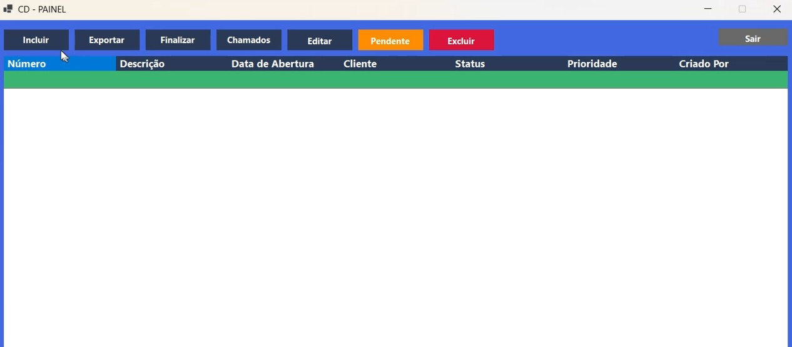
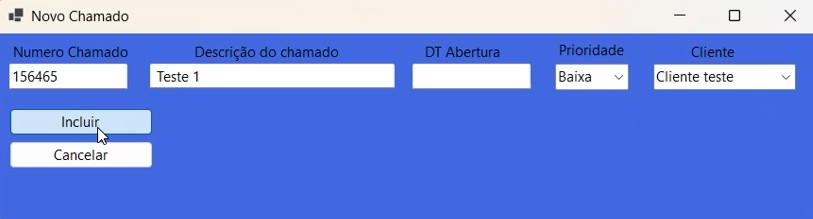
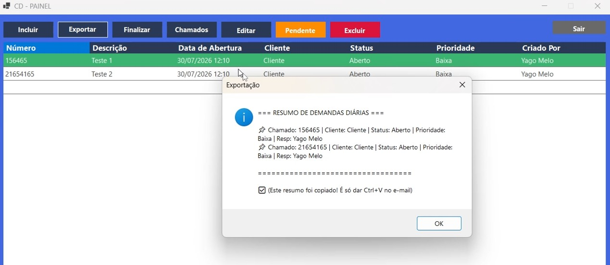
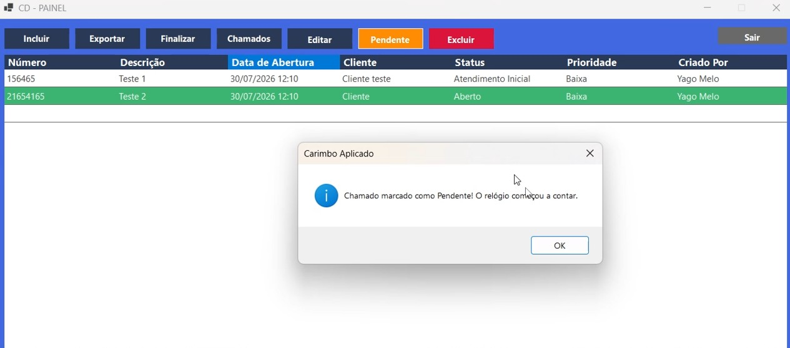

Sobre Mim
Profissional de suporte técnico com experiência em resolução de problemas, atendimento ao usuário e manutenção de infraestrutura. Atualmente estudando desenvolvimento de software para expandir minhas habilidades tecnológicas.
Tecnologias & Habilidades
Meus Projetos
Meu Site
//API desenvolvida com C#, Entity Framework Core e SQL Server para gerenciamento de experiências profissionais e portfólio dinâmico.
// // Ver no GitHub //



Sistema Controle de Demandas
Sistema completo para controle de atendimento N1/N2, com cadastro de chamados, status e exportação de Lista. Com controle por nivel de usuario
Ver no GitHubExperiência Profissional
Carregando experiências...
Competências & Foco de Atuação
Desenvolvimento Back-End & APIs
Construção de APIs utilizando C# e .NET, modelagem de banco de dados relacional com SQL Server e integração completa via Entity Framework Core.
Suporte Técnico (N1)
Resolução de problemas relacionados ao sistema da empresa, atendimento ao usuário, diagnóstico de falhas em sistemas e manutenção de ambientes corporativos.
Desenvolvimento Front-End & Interfaces
Criação de páginas web responsivas utilizando HTML5, CSS3 moderno (Dark Mode) e JavaScript para consumo de APIs REST.
Inteligencia Artificial
Utilização de IA's para auxilio no desenvolvimento proficional, para resolução de problemas e estudos relacionados a programação